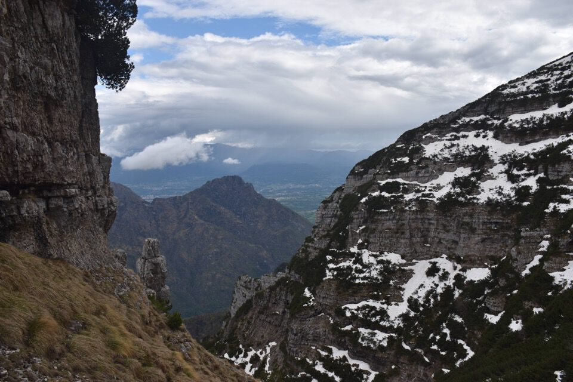
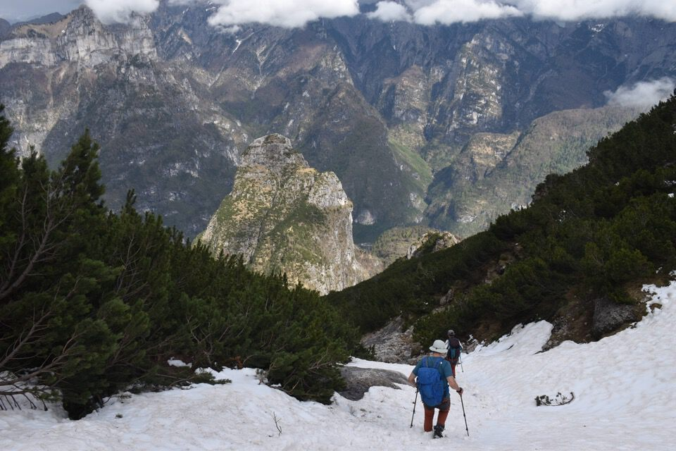
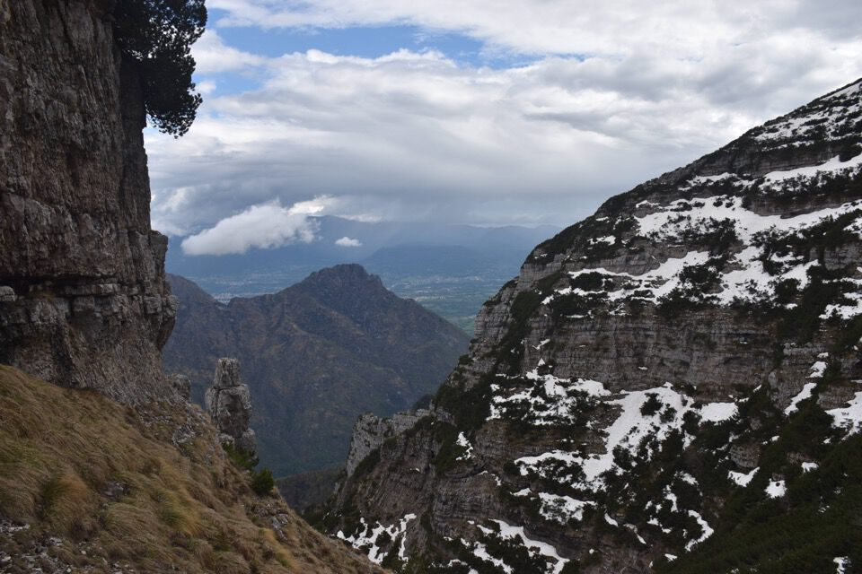
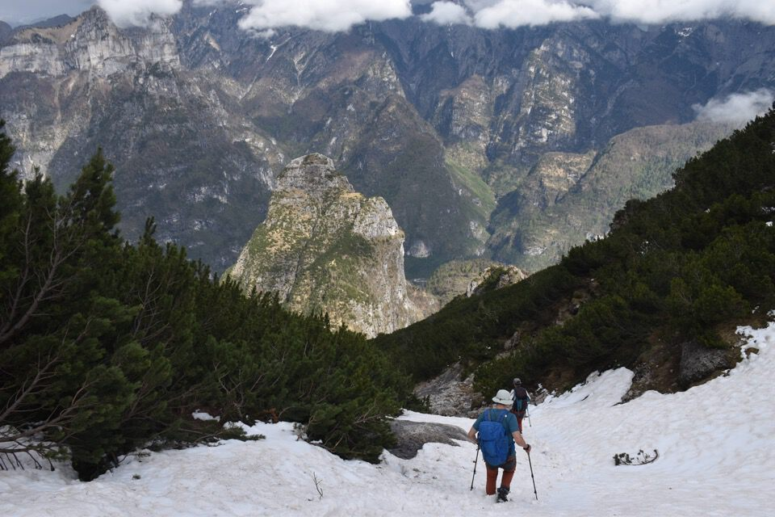

Le Stornade è una montagna meravigliosa, imponente, unica; si eleva fra la Forzèla del Camìn ad ovest e la Forzèla de la Rochéta ad est, con a sud la val Coràie e a nord la val del Mus.
Essa presenta un vant verso est ed è cinta da numerose e misteriose cenge, quindi è piena di viaz di camosci: luogo da sogno!
La passerella di Peron: sullo sfondo i Monti del Sole.


Oggi avvicinamento in bici, devo dire che è stato proprio piacevole.

Chiaramente ci perdiamo all'istante, nonostante le precisissime informazioni dello Zio Mario, finendo su un'improbabile cengia discendente in val Coràie.
Comunque il luogo è impressionante e bellissimo: una forra profondissima e pareti altissime. Le foto non rendono nulla in questi casi!
Torniamo sulla retta via; lassù i due spalloni (mi sovviene il Pelmo) de Le Stornade: manca ancora un po' eh!

Ecco l'entrata nella val de la Fratta, che è quella a dx, con la val Col dei Bòi a sx (quest'ultima s'impenna poi impraticabile fino alla forcella ove si trova il Mandrìz de la Rochéta — che però inspiegabilmente non è la Forzèla de la Rochéta; quest'ultima è la forcella soggiacente il Col Zaresìn).
Attraversiamo luoghi bellissimi e solitari, che però poco si prestano ad un reportage fotografico essendoci molta vegetazione.
La Rochéta, con a dx la Schiara.


Ecco lassù la forcella dei Vanùz (= piccoli Van), da cui poi inizieremo a traversare verso dx per le cenge del versante est de Le Stornade.
Dalla forcella dei Vanùz la vista si apre improvvisamente, d'altronde siamo a picco sopra la val Coràie. Impressionante la mole della Cima delle Coràie! Da notare a metà foto l'esile viaz Eleonora che dalla val dei Péz (via di salita al Mónt Alt) conduce fino a forcella delle Coràie.
Ma la cosa più interessante è la mitica cengia sud de le Stornade, lunghissima e difficile, che presenta un passaggio su loppe esposte detto «il filtro»: se lo passi sei idoneo e puoi percorrere tutta la cengia.

Ma noi andiamo in direzione contraria.

Guardiamoci un po' attorno, che di questi posti conosco poco: in centro la Pala Bassa.

Rochéta, Spirlónga, Còro.
Il Còro: ma cosa c'è di più bello?
Dalla cengia superiore iniziamo ad alzarci cercando di accedere al Vant. Pensavo ormai fosse fatta: non ho neppure perso tempo a casa ad informarmi, pensavo fosse ovvia la questione. Peccato che non capiamo mica quale canale vada salito!
Su e giù varie volte, ma alla fine grazie allo Zio Mario troviamo un canale salibile, che è alquanto vicino a forcella dei Vanùz e non penso sia quello usuale.

Dal Cordévole alla Pala Alta, mica male.

Laggiù San Sebastiano e Tamer.

Ecco finalmente il Vant de le Stornade.

Il bel antro da bivacco poco sotto la cima.

Lungo la panoramica cresta finale.

Ci tocca penare fino all'ultimo.
Dalla cima delle Stornade, raggiunta dopo più di 7 ore (... ve l'ho detto che abbiamo fatto dei pasticci), verso Palàza, Mónt Alt e Cima delle Coràie.
Verso Agordo.

Mónt Alt e Cima delle Coràie; sul primo ci sono stato in gennaio con Ivan e Jenny.

Verso la cima del Camìn, sovrapposta alla cima Feruch est.
Le Anténe, montagna cazzutissima a quanto mi dice Tomaso: quando andiamo?
 




Zélo.
Per la via normale scendiamo al Mandrìz de la Rochéta.

Alcuni resti del Mandrìz: vacci su per il sentiero della val dei Zoldani, e poi pensa che ci salivano con le mucche!

La maggioranza dice no al viaz de la Zinturela, peccato, e allora giù per la val dei Zoldani; la Rochéta è un missile.
Un Burèl tenebroso.

Lungo la via degli Ospizi: non finisce più. Bellissima però, poi per me era una sorpresa continua.

***